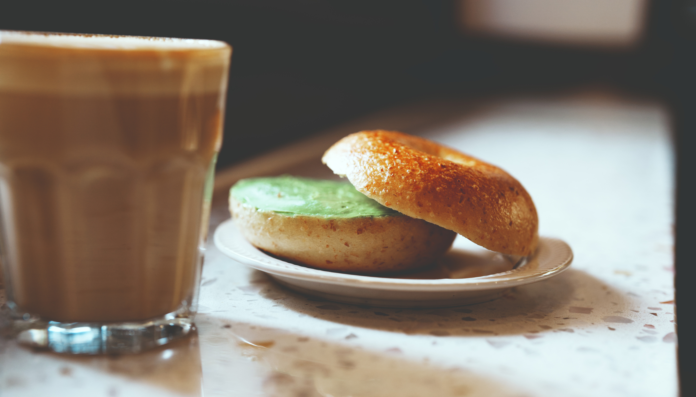

Welcome to the World of Bagel
One of the most popular types of bread nowadays
A bagel (Yiddish: בײגל, romanized: beygl; Polish: bajgiel; also spelled beigel) is a bread roll originating in the Jewish communities of Poland. It is traditionally shaped by hand into a roughly hand-sized ring from yeasted wheat dough that is first boiled for a short time in water and then baked. The result is a dense, chewy, doughy interior with a browned and sometimes crisp exterior.
Bagels are often topped with seeds baked on the outer crust—traditional choices include poppy and sesame seeds—or with salt grains. Different dough types include whole-grain and rye. The basic roll-with-a-hole design, hundreds of years old, allows even cooking and baking of the dough; it also allows groups of bagels to be gathered on a string or dowel for handling, transportation, and retail display.

Where Do Bagels Come From
The earliest known mention of a boiled-then-baked ring-shaped bread can be found in a 13th-century Syrian cookbook, where they are referred to as ka'ak. Bagel-like bread known as obwarzanek was common earlier in Poland as seen in royal family accounts from 1394. Bagels have been widely associated with Ashkenazi Jews since the 17th century; they were first mentioned in 1610 in Jewish community ordinances in Kraków, Poland.
Where to Buy
Bagels are now a popular bread product in North America and Poland, especially in cities with a large Jewish population. Bagels are also sold (fresh or frozen, often in many flavors) in supermarkets.